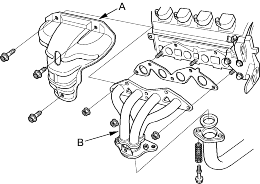
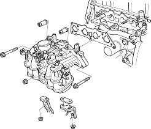
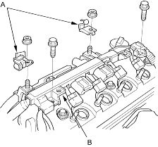
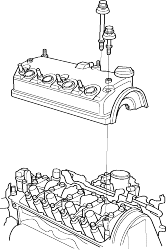

- Remove the cover (A), then remove the exhaust manifold (B).

- Remove the intake manifold.

- Remove the four ignition coils refer to the '01 Civic Shop Manual on this CD (see page 4-24).
- Remove the throttle cable clamps (A) and harness holder (B) from the cylinder head cover.

- Remove the cylinder head cover.
